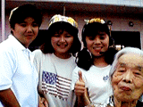

どうしたことかふと目が覚めた 午前三時である 晝 格別まとまつた手仕事をしてゐないせいか空しい気がする 目が覚めるとしきりとお父さん（主人の事）が思い出されてならぬ 今頃居てくれたらどうして暮してゐるだらう 亡くなつた頃計画してゐた繭の組合製糸場をつくつて手が離せる様になつたら人にまかせて東京に出て商賣をしようと云つてゐた 夢が実現したら今ごろ何とか東京で暮してゐたかも知れぬ 孫二人も出来たので大よろこびで生がいを感じてゐただらうに主人は肉親の縁にうすい人であつた 幼くして母をうしない 父と弟と三人で十九年も暮したと云う 父の愛情で二人共ぐれもせず人と成つた
三人共眞面目な性質であつた 商賣すきで一生商いをし家で事業をやつて明け暮れた 寝た間も仕事の事が頭から離れない熱心さであつた 若い時は少しは遊んだ様子だがおぼれる様にもなかつたのか後を引かぬ遊び方で 要領がよかつたとも云へる人であつた 結婚の費用に使つたのか 師走になつて父と二人でひそひそ話したりして苦労してゐた 新妻であつた私に知られない様にとの心遣いである
其の時分の金百二十円を高利の金で借りて居た事は後になつて分ったことである 中々払へず何年かの後で返済することが出来たらしい 蚕買と云う商賣もよく儲けよく損もする浮き沈みの多い仕事である やつてゐるとスリルがあつて面白いことも多い 又苦しい事も多い
私の今の日暮しは苦労のない楽なものである 新居を建ててしばらくは義昭の気分勝れずしかめつらをしてゐた やつたことのない借金を背負はされて苦しんでゐたらしい 楽観やの静を相手で今になつても貯蓄等念頭にない様な気質である
先生と云う仕事も苦労があるだらう 人それぞれにやつてゆかねばならぬことである 家族を養うと云うことは大へんなことである それ以上に貯蓄をすると云うことは大へんであるだらう 静の様に子孫に美田を残さずと云うてのうのう暮すのも一つの考へ方であると思う 金はなくとも何とかなつてゆくものである 私は何と仕合せ者であるだらうとつくづく思う 主人は腕っぱしの強い力量のある商賣人であり暖かい愛情のあつた人で精神的な苦労はなかつた 親孝行者でいい人であつた やつと一人前に世間でものを云へる様になつて逝ってしまい残念この上もないが運命なら致し方もない 孫も見ずして逝ったのは何より私には残念で心残りである さぞよろこんでくれたであらうに 私一人で幸にうまつてゐる様だ
義昭がやさしくいい人で 子供達もいい子が出来るらしい 老いた私楽しいものである 誰よりも幸らしい 有難いことである
主人が働いて残してくれた幾許かがあつたお陰は大きい家を建てる本体となつたのだつた 一家を包んでくれた 暖かい愛情につつまれて楽しい其の日が過してゆけるのである
大きなみ仏のお陰様であることを私はいつも感じる 父（忠次）も真宗の信者であつた 楽かんで幸な人の様に思えた 私が嫁した時は六十五であつた 其の時より何一つ仕事はしなかつた 温泉行に遊びにすごした 考へて見れば 偉い人であつたのだ 子供に親孝行をさせることの出来るいい親であつた
子供のために一生を捧げ後添も娶らず親子三人で過した 男世帯で商いをやり乍ら暮すのも一通りの苦労ではないであらう 膳椀茶わん一通りの世帯道具も取揃へてあつた よくもまあと感胆の外はない
息子二人を一人前にして次男の定次に嫁を娶る 五十日目に定次は壊血病にて亡くなつた 大阪で洋服の仕事を自立して仕事請合いを二三人でやつてゐたのに惜しいことした 淋しくなつた
父の悲しみは頂点に達したであらう
お正信偈を読み覚えられたのも其の頃からである 父には浄瑠璃の三味線と云う趣味があつた 子供の時から目が悪く三男で家のくらしはよく 若い時から三味をはじめたそうだ 小唄からけいこをした 三味で高瀬一とよばれる程の腕前であつた この趣味がどれ丈父をなぐさめた事であらう 七十九才で亡くなる迄神仏を讃えよろこび乍ら一生を終へられた
父は小山家の初代である 寺岡の三男に生れ兵隊のがれに小山家の株を買い 嫡子となり兵役をのがれ小山となつた人である
昔は十年の役（西南の役）を見た親達が子供の為に兵役をきらつたからである
| ばあちゃんの食いもん |